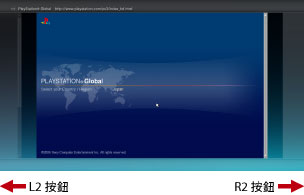
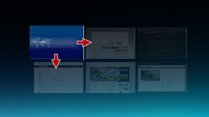

網路 > 關於瀏覽模式／視窗模式
關於瀏覽模式／視窗模式
瀏覽模式
顯示符合畫面寬度的視窗。同時開啟視窗時會橫向並排顯示。按下L2按鈕／R2按鈕可移往其他視窗。

視窗模式
會配合開啟的視窗數量變更顯示方式。使用方向按鈕選擇視窗後按下 按鈕，即會改以瀏覽模式顯示選擇的視窗。
按鈕，即會改以瀏覽模式顯示選擇的視窗。

更換顯示模式
使用以下操作，可交互選擇瀏覽模式或視窗模式。
| 瀏覽模式＞視窗模式 | 按壓左操作桿（L3按鈕） |
|---|---|
| 視窗模式＞瀏覽模式 |
|
搜尋用戶指南
網路 > 關於瀏覽模式／視窗模式
顯示符合畫面寬度的視窗。同時開啟視窗時會橫向並排顯示。按下L2按鈕／R2按鈕可移往其他視窗。

會配合開啟的視窗數量變更顯示方式。使用方向按鈕選擇視窗後按下按鈕，即會改以瀏覽模式顯示選擇的視窗。

使用以下操作，可交互選擇瀏覽模式或視窗模式。
| 瀏覽模式＞視窗模式 | 按壓左操作桿（L3按鈕） |
|---|---|
| 視窗模式＞瀏覽模式 |
|
網路 > 關於瀏覽模式／視窗模式